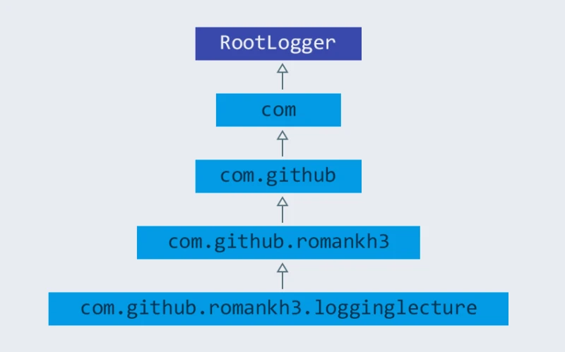

JUnit
Введение
Тестирование – это процесс проверки функционала программы с целью подтверждения того, что она работает в соответствии с определёнными требованиями. Unit-тестирование – это тестирование, которые пишутся, непосредственно, на уровне разработчика (тестирование определённой сущности – метод или класс). Это крайне важный этап разработки ПО, который помогает создавать качественный продукт.
Юнит-тестирование делится на две большие группы:
-
Ручное тестирование
-
Автоматизированное тестирование
| Ручное тестирование | Автоматизированное тестирование |
|---|---|
Ручное выполнение тестов без помощи каких-либо средств. |
Использование специальных средств для автоматизированного тестирования |
Не программируется Нет возможности для написания сложных тестов для тестирования сложных моделей поведения. |
Программируется Тестировщики могут написать сложные тесты для тестирования сложных моделей программирования |
Низкая надёжность Ручное тестирование имеет низкую надёжность, так как крайне подвержено влиянию человеческого фактора. |
Высокая надёжность Автоматизированное тестирование точное и надёжное. |
Большие затраты времени Связано с тем, что человек имеет крайне ограниченные возможность в скорости работы. |
Быстро Автоматизированные тесты выполняются на порядок быстрее, чем это может сделать человек. |
JUnit
JUnit – это фреймворк, разработанный для тестирования программ, написанных с использованием технологии Java. Он лежит в основе TDD (Test-Driven Development) и входит в семейство фрейморков для тестирования xUnit.
Главная идея данного фреймворка – “сначала тесты, потом код”. Это означает, что сначала мы определяем, что должно получиться в результате работы того или иного куска кода и пишем тесты, которые проверяют идентичность результата с требуемым, после чего пишем сам кусок кода, который и будем тестировать. Данный подход увеличивает эффективность работы разработчика и позволяет писать более стабильный код. В результате этого мы получаем меньшее количество времени, которое затрачивается на отладку программы.
Свойства JUnit
-
Фреймворк с открытым исходным кодом, который используется для написания и выполнения тестов.
-
Позволяет писать код более быстро и качественно.
-
Крайне прост в использовании.
-
Поддерживает аннотации для идентификации методов.
-
Поддерживает утверждения для тестирования получаемых результатов.
-
Тесты могут быть организованы в связки тестов (test suites).
-
Имеет визуальную индикацию состояния тестов (красные – не пройдены, зелёные – пройдены).
Тестовый случай
Тестовый случай (Test Case) в юнит тестировании – это часть кода, которая проверяет, что другая часть кода (в частности – метод) работает в соответствии с определёнными требованиями.
Формально описанный тестовый случай характеризуется известными входными данными и ожидаемым выводом программы, который известен до начала выполнения теста.
Необходимо создавать, как минимум, два тестовых случая для каждого требования – положительный и отрицательный. Если требование имеет под требования, каждое из них должно тестироваться отдельно.
JUnit 5
JUnit 5 требует Java 8 (или выше) во время выполнения. Однако вы все равно можете протестировать код, скомпилированный с предыдущими версиями JDK.
В отличие от предыдущих версий JUnit, JUnit 5 состоит из нескольких разных модулей из трех разных подпроектов.
JUnit 5 = Platform JUnit + JUnit Jupiter + JUnit Vintage
JUnit платформа служит основой для запуска тестирования рамок на JVM. Он также определяет TestEngineAPI для разработки инфраструктуры тестирования, работающей на платформе. Кроме того, платформа предоставляет средство запуска консоли для запуска платформы из командной строки и средство запуска на основе JUnit 4 для запуска любого TestEngine на платформе в среде на основе JUnit 4. Первоклассная поддержка платформы JUnit также существует в популярных IDE (см. IntelliJ IDEA, Eclipse, NetBeans и код Visual Studio) и инструментах сборки (см. Gradle, Maven и Ant).
JUnit Jupiter является сочетанием новой модели программирования и модели расширения для написания тестов и расширений в JUnit 5. Jupiter подпроекте обеспечивает TestEngine для выполнения тестов на основе Jupiter на платформе.
JUnit Vintage обеспечивает TestEngine запуск тестов на основе JUnit 3 и JUnit 4 на платформе.
Получать помощь, а также задайте вопросы, связанные с JUnit 5 можно на Stack Overflow или пообщайтесь с нами в Gitter.
В junit5-samples репозитории размещена коллекция примеров проектов, основанных на JUnit Jupiter, JUnit Vintage и других средах тестирования. Вы найдете подходящие сценарии сборки.
-
Для Gradle и Java ознакомьтесь с junit5-jupiter-starter-gradle проектом.
-
Для Gradle и Kotlin ознакомьтесь с junit5-jupiter-starter-gradle-kotlin проектом.
-
Для Gradle и Groovy ознакомьтесь с junit5-jupiter-starter-gradle-groovy проектом.
-
Для Maven проверьте junit5-jupiter-starter-maven проект.
-
Что касается Ant, ознакомьтесь с junit5-jupiter-starter-ant проектом.
Аннотации
JUnit Jupiter поддерживает следующие аннотации для настройки тестов и расширения фреймворка.
Аннотация |
Свойство |
|
Означает, что метод является методом тестирования. В отличие от аннотации JUnit 4, эта аннотация не объявляет никаких атрибутов, так как тестовые расширения в JUnit Jupiter работают на основе собственных специальных аннотаций. Такие методы наследуются, если они не переопределены. |
|
Означает, что метод является параметризированным тестом. Такие методы наследуются, если они не переопределены. |
|
Означает, что метод является тестовым шаблоном для повторного теста. Такие методы наследуются, если они не переопределены. |
|
Означает, что метод является испытательным заводом для динамических тестов. Такие методы наследуются, если они не переопределены. |
|
Означает, что метод является шаблоном для тестовых случаев, предназначенных для вызова несколько раз в зависимости от количества контекстов вызова, возвращенных зарегистрированными поставщиками. Такие методы наследуются, если они не переопределены. |
|
Используется для настройки порядка выполнения тестового метода для аннотированного тестового класса; похож на JUnit 4’s. Такие аннотации наследуются. |
|
Используется для настройки жизненного цикла экземпляра теста для аннотированного тестового класса. Такие аннотации наследуются. |
|
Объявляет пользовательское имя дисплея для тестового класса или метода тестирования. Такие аннотации не наследуются. |
|
Объявляет пользовательский генератор имен отображения для тестового класса. Такие аннотации наследуются. |
|
Означает, что аннотированный метод должен быть выполнен перед каждым, или методом в текущем классе; по аналогии с JUnit 4’s. Такие методы наследуются, если они не переопределены. |
|
Означает, что аннотированный метод должен быть выполнен после каждого, или метода в текущем классе; по аналогии с JUnit 4’s. Такие методы наследуются, если они не переопределены. |
|
Означает, что аннотированный метод должен быть выполнен прежде всего, и методы в текущем классе; по аналогии с JUnit 4’s. Такие методы наследуются (если они не скрыты или переопределены)и должны быть (если не используется жизненный цикл "в каждом классе" экземпляра теста). |
|
Означает, что аннотированный метод должен быть выполнен в конце концов, и методы в текущем классе; по аналогии с JUnit 4’s. Такие методы наследуются (если они не скрыты или переопределены)и должны быть (если не используется жизненный цикл "в каждом классе" экземпляра теста). |
|
Означает, что аннотированный класс является нестатичным вложенным тестовым классом. и методы не могут быть использованы непосредственно в тестовом классе, если не используется жизненный цикл экземпляра теста "на класс". Такие аннотации не наследуются. |
|
Используется для объявления тегов для фильтрации тестов, либо на уровне класса или метода; аналогично тестовым группам в TestNG или Categories в JUnit 4. Такие аннотации наследуются на уровне класса, но не на уровне метода. |
|
Используется для отключения тестового класса или метода тестирования; по аналогии с JUnit 4’s. Такие аннотации не наследуются.@Ignore |
|
Используется для неудачи теста, испытательного завода, шаблона тестирования или метода жизненного цикла, если его выполнение превышает данный срок. Такие аннотации наследуются. |
|
Используется для регистрации расширений декларативно. Такие аннотации наследуются. |
|
Используется для регистрации расширений программно через поля. Такие поля наследуются, если они не затенены. |
|
Используется для поставки временного каталога с помощью инъекций поля или инъекций параметра в метод жизненного цикла или метод тестирования; расположен в пакете |
Все основные аннотации находятся в org.junit.jupiter.api пакете в junit-jupiter-api модуле.
Утверждения
JUnit 5 поставляется со многими стандартными утверждениями, которые можно найти в классе org.junit.jupiter.api.Assertions.
Основные утверждения:
-
assertEquals(), -
assertArrayEquals(), -
assertSame(), -
assertNotSame(), -
assertTrue(), -
assertFalse(), -
assertNull(), -
assertNotNull(), -
assertLinesMatch(), -
assertIterablesMatch()
Mockito
Mockito: что это такое и зачем нужно
Говоря коротко, Mockito – фреймворк для работы с заглушками.
Как известно, при тестировании кода (прежде всего юнит-тестировании, но не только) тестируемому элементу часто требуется предоставить экземпляры классов, которыми он должен пользоваться при работе. При этом часто они не должны быть полнофункциональными – наоборот, от них требуется вести себя жёстко заданным образом, так, чтобы их поведение было простым и полностью предсказуемым. Они и называются заглушками (stub). Чтобы их получить, можно создавать альтернативные тестовые реализации интерфейсов, наследовать нужные классы с переопределением функционала и так далее, но всё это достаточно неудобно, избыточно и чревато ошибками. Более удобное во всех смыслах решение – специализированные фреймворки для создания заглушек. Одним из таковых (и, пожалуй, самым известным для Java) и является Mockito.
Mockito позволяет создать одной строчкой кода так называемый mock (что-то вроде основы для нужной заглушки) любого класса. Для такого mock сразу после создания характерно некое поведение по умолчанию (все методы возвращают заранее известные значения — обычно это null либо 0). Можно переопределить это поведение желаемым образом, проконтролировать с нужной степенью детальности обращения к ним так далее. В результате mock и становится заглушкой с требуемыми свойствами.
Также mock можно создать и для тех классов, новый экземпляр которых вообще-то так просто не создашь, в частности, классов с исключительно приватными конструкторами типа синглтонов и утилитных классов, а при минимальной настройке фреймворка — и перечислений (enums).
Наибольшее распространение получили следующие возможности Mockito :
-
создание заглушек для классов и интерфейсов;
-
проверка вызова метода и значений передаваемых методу параметров;
-
использование концепции «частичной заглушки», при которой заглушка создается на класс с определением поведения, требуемое для некоторых методов класса;
-
подключение к реальному классу «шпиона» spy для контроля вызова методов.
Mock и Spy
Центральный класс Mockito, через который предполагается обращаться к большей части функционала, — это, собственно, класс под названием Mockito (есть также класс BDDMockito, предоставляющий примерно те же возможности в форме, более подходящей для BDD. Доступ к функционалу реализован через его статические методы.
Помните, что методы mock объекта возвращают значения по умолчанию: false для boolean, 0 для int, пустые коллекции, null для остальных объектов. Для spy — значение, возвращаемое методом реального объекта.
Для того, чтобы отличить mock-объект от обычного в составе Mockito для этого есть инструмент — метод Mockito.mockingDetails. Передав ему произвольный объект, получим объект класса MockingDetails. Он содержит информацию о том, что этот объект представляет собой с точки зрения Mockito: является ли он mock, spy (см. ниже), как использовался, как был создан и прочее.
Поведение по умолчанию (и не только его) можно изменить при помощи функционала класса MockSettings, но это нечасто бывает нужно.
Чтобы создать Mockito объект можно использовать либо аннотацию @Mock, либо метод mock.
@Mock
ICalculator mcalc;
ICalculator mcalc = Mockito.mock(ICalculator.class);Однако, что если необходимо использовать в качестве заглушки объект реального класса с имеющимся функционалом, переопределив работу только части его методов? На этот случай в Mockito есть так называемые spy, "шпионы". В отличие от mock’ов, их можно создавать на основе как класса, так и готового объекта.
DataService dataServiceSpy = Mockito.spy(DataService.class);
// or
DataService dataService = new DataService();
dataServiceSpy = Mockito.spy(dataService);При создании spy на основе класса, если его тип — интерфейс, будет создан обычный mock-объект, а если тип — класс, то Mockito попытается создать экземпляр при помощи конструктора по умолчанию (без параметров). И только если такого конструктора нет, произойдёт ошибка и тест не сработает.
Управление поведением
В целом управление поведением mock-объекта сводится к одной очевидной концепции: когда на mock так-то воздействовали (то есть вызван такой-то метод с такими-то аргументами), он должен отреагировать так-то и так-то. У этой концепции существуют две реализации в рамках класса Mockito — основная, рекомендуемая разработчиками к использованию везде, где это возможно, и альтернативная, применяемая там, где основная не годится.
Основная реализация базируется на методе Mockito.when. Этот метод принимает в качестве "параметра" вызов переопределяемого метода mock-объекта (таким образом фиксируется определяемое воздействие) и возвращает объект типа OngoingStubbing, позволяющий вызвать один из методов семейства Mockito.then… (так задаётся реакция на это воздействие).
//when(mock).thenReturn(value)
public interface DataService {
void saveData(List<String> dataToSave);
String getDataById(String id);
String getDataById(String id, Supplier<String> calculateIfAbsent);
List<String> getData();
List<String> getDataListByIds(List<String> idList);
List<String> getDataByRequest(DataSearchRequest request);
}
-----------------------------------------
List<String> data = new ArrayList<>();
data.add("dataItem");
Mockito.when(dataService.getAllData()).thenReturn(data);После этой операции, вызвав у объекта dataService метод getAllData(), получим объект, data.
Альтернативная реализация связывания условия и результата вызова — методы семейства Mockito.do…. Эти методы позволяют задать поведение начиная с результата вызова и возвращают объект класса Stubber, уже при помощи которого можно задать условие.
//doReturn(value).when(mock).method(params)
public interface DataService {
List<String> getData();
}
-----------------------------------------
List<String> data = new ArrayList<>();
data.add("dataItem");
Mockito.doReturn(data).when(dataService).getData()Обратите внимание: в первой реализации при задании поведения метода (в данном случае getAllData()) сначала выполняется вызов ещё не переопределённой его версии, и только потом, в недрах Mockito, происходит переопределение. Во второй же такого вызова не происходит — методу Stubber.when передаётся непосредственно mock, а уже у возвращённого этим методом объекта того же типа, но другой природы совершается вызов переопределяемого метода. Эта разница всё и определяет. Связывание через Mockito.do… никак не контролирует на стадии компиляции то, какой переопределяемый метод я вызову и совместим ли он по типу с заданным возвращаемым значением.
Задание условий вызова
Пример выше касается метода без параметров, и связанное с ним условие вызова возможно одно — сам факт вызова. Как только появляются параметры, ситуация становится сложнее. Как минимум, для вызова метода, поведение которого я задаю, мне нужно что-то ему передать. Но важнее другое: может оказаться, что задаваемую реакцию я хочу получать не всегда, а только при вызове с параметрами, отвечающими определённым требованиям. Если нужно задать реакцию на любой вызов этого метода независимо от аргументов, можно воспользоваться методом Mockito.any
public interface DataService {
String getDataItemById(String id);
-----------------------------------------
Mockito.when(dataService.getDataItemById(any()))
.thenReturn("dataItem");Если же требуется, чтобы mock реагировал только на определённое значение аргумента, можно использовать непосредственно это значение или методы Mockito.eq (когда речь об эквивалентности) либо Mockito.same (когда требуется сравнение ссылок)
Mockito.when(dataService.getDataItemById("idValue"))
.thenReturn("dataItem");
// or
Mockito.when(dataService.getDataItemById(Mockito.eq("idValue")))
.thenReturn("dataItem");При работе с методами с более чем одним аргументом заданные требования комбинируются в соответствии с логическим И, то есть для получения заданного результата КАЖДЫЙ из аргументов должен отвечать поставленному требованию.
Кроме того, при задании поведения такого метода нельзя комбинировать использующие матчеры статические методы Mockito и прямую передачу значений. Используйте Mockito.eq или Mockito.same
Задание результатов вызова
После того, как метод mock-объекта вызван, объект должен отреагировать на вызов. Основные возможные последствия — возвращение результата и выбрасывание исключения, и именно на эти варианты в первую очередь рассчитан инструментарий Mockito.
Mockito.when(dataService.getAllData()).thenReturn(data);Также
Mockito.when(dataService.getDataById("invalidId"))
.thenThrow(new IllegalArgumentException());Есть и другой способ: можно создать объект исключения и бросить непосредственно его, а можно предоставить Mockito только класс исключения, чтобы оно было создано автоматически. В обоих случаях синтаксис позволяет использовать и checked исключения, однако Mockito не позволит запустить такой тест, если тип исключения не соответствует методу, который я хочу заставить бросить это исключение.
Выше варианты реакции подходят, если в ответ на вызов с заданными условиями нужно всегда возвращать определённое, всегда одно и то же значение результата или выбрасывать всегда одинаковое исключение. Предположим, метод принимает коллекцию значений, а возвращает другую коллекцию значений, связанных с первыми одно к одному (например, это получение коллекции объектов данных по набору их ID), и в рамках теста необходимо использовать этот mock-объект неоднократно с разными наборами входных данных, получая каждый раз соответствующий результат. В Mockito есть метод Mockito.thenAnswer, он же Mockito.then. Он принимает реализацию функционального интерфейса Answer, единственный метод которого получает объект класса InvocationOnMock.
Mockito.when(dataService.getDataByIds(Mockito.any()))
.thenAnswer(invocation -> invocation
.<List<String>>getArgument(0).stream()
.map(id -> {
switch (id) {
case "a":
return "dataItemA";
case "b":
return "dataItemB";
default:
return null;
}
})
.collect(Collectors.toList()));Обратите внимание: типобезопасности InvocationOnMock не обеспечивает — аргументы возвращаются либо в виде массива Object[], либо generic-методом.
Отдельно стоит упомянуть ещё один вариант реакции — thenCallRealMethod. Предназначение понятно из названия. Он действует как для mock-, так и для spy-объектов. В случае mock все поля объекта, к которым может обратиться код метода, будут опять-таки иметь значение null. Для spy же использование thenCallRealMethod означает возвращение к поведению spy по умолчанию.
Методы thenReturn и thenThrow имеют перегруженные версии, принимающие varargs.
Mockito.when(dataService.getDataById("a"))
.thenReturn("valueA1", "valueA2")
.thenThrow(IllegalArgumentException.class);Здесь первый вызов метода с заданным параметром вернёт "valueA1, второй — "valueA2, а третий (и все последующие) будет вызывать выбрасывание IllegalArgumentException.
Слежение за вызовами методов
Метод verify позволяет проверить, была ли выполнена проверка с определенными параметрами. Если проверка не выполнялась или выполнялась с другими параметрами, то verify вызовет исключение.
Mockito.verify(dataService).getDataById(Mockito.any());Тест с такой конструкцией пройдёт успешно, если она находится после единственного за время выполнения теста вызова метода getDataById, и упадёт, если метод не был вызван или был вызван дважды и более.
Для проверки количества вызовов определенных методов Mockito предоставляет следующие методы:
-
atLeast(int min) - не меньше min вызовов;
-
atLeastOnce() - хотя бы один вызов;
-
atMost(int max) - не более max вызовов;
-
times(int cnt) - cnt вызовов;
-
never() - вызовов не было;
Mockito.verify(dataService, Mockito.times(1)).getDataById(Mockito.any());Mock-объекты как значения полей и аннотации Mockito
Если в классе теста есть поля, которым я хочу присвоить mock-объекты в качестве значений, это не обязательно делать вручную — достаточно снабдить его аннотацией @Mock.
Для spy предусмотрена аннотация @Spy — она в целом аналогична @Mock… но для spy может использоваться объект, на основе которого он будет создан (несмотря на название, этот метод предназначен не только для mock’ов, а задействует также и все нижеперечисленные аннотации). Такой объект можно сразу указать в качестве значения аннотируемого поля, но можно и не указывать — тогда spy будет создан на основе класса.
Есть аннотация @Captor для создания экземпляров ArgumentCaptor.
Ещё существует @InjectMocks. Помеченное таким образом поле инициализируется настоящим объектом указанного класса. Его поля по возможности проинициализированы значениями mock-полей, помеченных соответствующей аннотацией. Для этого используется конструктор с наибольшим числом параметров, сеттеры и так далее. Если какого-то объектного параметра конструктора не хватает, вместо него будет использован null, а вот параметр-примитив просто не позволит тесту сработать. В целом это похоже на маленькую и простую (и всё равно не такую уж примитивную) реализацию dependency injection.
Откат поведения к дефолтному и сессии Mockito
Чтобы привести все mock-объекты в состояние по умолчанию можно использовать методы Mockito.reset и Mockito.clearInvocations. Оба принимают varargs, и передавать им нужно соответствующие mock’и.
Ещё одно решение — использовать так называемые сессии Mockito. Именно его рекомендуют авторы. В начале сессии все mock-объекты инициализируются, а после работы обязательно должно быть выполнено её окончание (хотя mock’и продолжают оставаться функциональными и после него). Если я хочу создавать отдельную сессию для каждого тестового метода, то удобно создать поле типа MockitoSession, присвоить ему значение до вызова тестового метода и завершить сессию после.
@Mock
DataService dataService;
MockitoSession session;
@BeforeMethod
public void beforeMethod() {
session = Mockito.mockitoSession()
.initMocks(this)
.startMocking();
}
@Test
public void testMethod() {
// some code using the dataService field
}
@AfterMethod
public void afterMethod() {
session.finishMocking();
}Liquibase
Liquibase представляет систему управления версиями базы данных, в основном это касается структуры и в меньшей степени содержимого базы. При этом описание базы с одной стороны достаточно абстрактно и позволяет использовать на нижнем уровне различные СУБД, и с другой стороны всегда можно перейти на SQL-диалект конкретной СУБД, что достаточно гибко.
Liquibase является устоявшимся проектом с открытым исходным кодом и активно используется за пределами своей родной Java среды и не требует глубоких знаний Java для работы. В качестве описания структуры базы и изменений базы исторически использовался XML формат, однако сейчас параллельно поддерживается YAML и JSON. Более подробно: Liquibase Docs
Использовать Liquibase можно различными способами:
-
как консольное приложение
-
как java-library подключенная к проекту
-
как встроенную задачу в CI/CD инструмент
Настройка окружения
Установка и настройка СУБД
Так как Liquibase систему управления версиями базы данных, то необходимо устанавливать и настраивать СУБД. Вместо этого можно использовать Docker Compose и следующий файл для запуска PostgreSQL как Docker Container:
version: '3.7'
services:
maven-liquibase-postgres:
container_name: maven-liquibase-postgres-container
image: postgres
restart: unless-stopped
environment:
POSTGRES_DB: ${POSTGRES_DATABASE:-maven-liquibase}
POSTGRES_USER: ${POSTGRES_USER:-postgres}
POSTGRES_PASSWORD: ${POSTGRES_PASSWORD:-postgres}
ports:
- '5432:5432'Для запуска можно использовать команду:
docker-compose up -dДалее, при работе с Liquibase, будет использоваться данная СУБД.
Проект с Liquibase
При разработке на Java наиболее удобным будет использование Apache Maven или Gradle.
В дальнейшем речь пойдет именно о Apache Maven.
.
├── pom.xml
└── src
└── main
└── resources
├── data
├── liquibase.properties
└── master.xml
-
pom.xml- содержит все необходимые зависимости, настройки для Liquibase -
liquibase.properties- файл с настройками соединения к базе (логин/пароль и возможно другие параметры) -
xml-файл с изменениями базы (либо другие варианты: YAML, JSON, XML + SQL, YAML + SQL, JSON + SQL)
pom.xml<?xml version="1.0" encoding="UTF-8"?>
<project xmlns="http://maven.apache.org/POM/4.0.0" xmlns:xsi="http://www.w3.org/2001/XMLSchema-instance"
xsi:schemaLocation="http://maven.apache.org/POM/4.0.0 http://maven.apache.org/xsd/maven-4.0.0.xsd">
<modelVersion>4.0.0</modelVersion>
<groupId>by.rakovets.example</groupId>
<artifactId>liquibase-maven</artifactId>
<version>1.0.0</version>
<packaging>pom</packaging>
<properties>
<project.build.sourceEncoding>UTF-8</project.build.sourceEncoding>
<project.reporting.outputEncoding>UTF-8</project.reporting.outputEncoding>
<log4j2.version>2.14.1</log4j2.version>
<liquibase.version>4.5.0</liquibase.version>
<postgresql.version>42.3.0</postgresql.version>
</properties>
<dependencies>
<!--Logging-->
<dependency>
<groupId>org.apache.logging.log4j</groupId>
<artifactId>log4j-api</artifactId>
<version>${log4j2.version}</version>
</dependency>
<dependency>
<groupId>org.apache.logging.log4j</groupId>
<artifactId>log4j-core</artifactId>
<version>${log4j2.version}</version>
</dependency>
<dependency>
<groupId>org.apache.logging.log4j</groupId>
<artifactId>log4j-slf4j-impl</artifactId>
<version>${log4j2.version}</version>
</dependency>
<!--JDBC drivers-->
<dependency>
<groupId>org.postgresql</groupId>
<artifactId>postgresql</artifactId>
<version>${postgresql.version}</version>
</dependency>
<dependency>
<groupId>org.liquibase</groupId>
<artifactId>liquibase-core</artifactId>
<version>${liquibase.version}</version>
</dependency>
</dependencies>
<build>
<plugins>
<plugin>
<groupId>org.liquibase</groupId>
<artifactId>liquibase-maven-plugin</artifactId>
<version>${liquibase.version}</version>
<configuration>
<propertyFile>src/main/resources/liquibase.properties</propertyFile>
<changeLogFile>src/main/resources/master.xml</changeLogFile>
<dataDir>src/main/resources/data</dataDir>
<!-- log -->
<verbose>true</verbose>
<logging>debug</logging>
<promptOnNonLocalDatabase>false</promptOnNonLocalDatabase>
</configuration>
</plugin>
</plugins>
</build>
</project>Файл с настройками соединения к базе
liquibase.propertiesusername=postgres
password=postgres
url=jdbc:postgresql://localhost:5432/maven-liquibase?prepareThreshold=0&stringtype=unspecifiedОсновным понятием liquibase являются так называемые changesets (изменения базы). Они могут включать в себя как изменения структуры, так и изменение данных. Для контроля примененных changesets Liquibase использует таблицы databasechangelog и databasechangeloglock.
master.xml<?xml version="1.1" encoding="UTF-8" standalone="no"?>
<databaseChangeLog xmlns="http://www.liquibase.org/xml/ns/dbchangelog"
xmlns:xsi="http://www.w3.org/2001/XMLSchema-instance"
xsi:schemaLocation="http://www.liquibase.org/xml/ns/dbchangelog http://www.liquibase.org/xml/ns/dbchangelog/dbchangelog-3.6.xsd">
<changeSet context="legacy" author="author (generated)" id="1">
<createTable tableName="test">
<column autoIncrement="true" name="id" type="SERIAL">
<constraints nullable="false"/>
</column>
<column name="user_name" type="VARCHAR(255)"/>
<column name="preferences" type="TEXT"/>
</createTable>
<rollback>
<dropTable tableName="test" />
</rollback>
</changeSet>
</databaseChangeLog>Обновление БД
mvn liquibase:updateЗдесь выполняется liquibase:update для базы указанной в liquibase.properties из liquibase.url, которая указана в стандартном JDBC формате.
[INFO] Scanning for projects... [INFO] [INFO] ----------------< by.rakovets.example:liquibase-maven >----------------- [INFO] Building liquibase-maven 1.0.0 [INFO] --------------------------------[ pom ]--------------------------------- [INFO] [INFO] --- liquibase-maven-plugin:4.5.0:update (default-cli) @ liquibase-maven --- [INFO] ------------------------------------------------------------------------ [INFO] Loading artifacts into URLClassLoader [INFO] artifact: file:/home/rakovets/.m2/repository/org/apache/logging/log4j/log4j-api/2.14.1/log4j-api-2.14.1.jar [INFO] artifact: file:/home/rakovets/.m2/repository/org/apache/logging/log4j/log4j-core/2.14.1/log4j-core-2.14.1.jar [INFO] artifact: file:/home/rakovets/.m2/repository/org/apache/logging/log4j/log4j-slf4j-impl/2.14.1/log4j-slf4j-impl-2.14.1.jar [INFO] artifact: file:/home/rakovets/.m2/repository/org/slf4j/slf4j-api/1.7.25/slf4j-api-1.7.25.jar [INFO] artifact: file:/home/rakovets/.m2/repository/org/postgresql/postgresql/42.3.0/postgresql-42.3.0.jar [INFO] artifact: file:/home/rakovets/.m2/repository/org/checkerframework/checker-qual/3.5.0/checker-qual-3.5.0.jar [INFO] artifact: file:/home/rakovets/.m2/repository/org/liquibase/liquibase-core/4.5.0/liquibase-core-4.5.0.jar [INFO] artifact: file:/home/rakovets/.m2/repository/javax/xml/bind/jaxb-api/2.3.0/jaxb-api-2.3.0.jar [INFO] artifact: file:/home/rakovets/dev/exp/liquibase/target/classes/ [INFO] artifact: file:/home/rakovets/dev/exp/liquibase/target/test-classes/ [INFO] ------------------------------------------------------------------------ [INFO] Loading artifacts into URLClassLoader [INFO] artifact: file:/home/rakovets/.m2/repository/org/apache/logging/log4j/log4j-api/2.14.1/log4j-api-2.14.1.jar [INFO] artifact: file:/home/rakovets/.m2/repository/org/apache/logging/log4j/log4j-core/2.14.1/log4j-core-2.14.1.jar [INFO] artifact: file:/home/rakovets/.m2/repository/org/apache/logging/log4j/log4j-slf4j-impl/2.14.1/log4j-slf4j-impl-2.14.1.jar [INFO] artifact: file:/home/rakovets/.m2/repository/org/slf4j/slf4j-api/1.7.25/slf4j-api-1.7.25.jar [INFO] artifact: file:/home/rakovets/.m2/repository/org/postgresql/postgresql/42.3.0/postgresql-42.3.0.jar [INFO] artifact: file:/home/rakovets/.m2/repository/org/checkerframework/checker-qual/3.5.0/checker-qual-3.5.0.jar [INFO] artifact: file:/home/rakovets/.m2/repository/org/liquibase/liquibase-core/4.5.0/liquibase-core-4.5.0.jar [INFO] artifact: file:/home/rakovets/.m2/repository/javax/xml/bind/jaxb-api/2.3.0/jaxb-api-2.3.0.jar [INFO] artifact: file:/home/rakovets/dev/exp/liquibase/target/classes/ [INFO] artifact: file:/home/rakovets/dev/exp/liquibase/target/test-classes/ [INFO] ------------------------------------------------------------------------ [project, pluginDescriptor] [INFO] Parsing Liquibase Properties File [INFO] File: src/main/resources/liquibase.properties [INFO] ------------------------------------------------------------------------ [INFO] [INFO] [INFO] Liquibase Community 4.5.0 by Datical [INFO] #################################################### ## _ _ _ _ ## ## | | (_) (_) | ## ## | | _ __ _ _ _ _| |__ __ _ ___ ___ ## ## | | | |/ _` | | | | | '_ \ / _` / __|/ _ \ ## ## | |___| | (_| | |_| | | |_) | (_| \__ \ __/ ## ## \_____/_|\__, |\__,_|_|_.__/ \__,_|___/\___| ## ## | | ## ## |_| ## ## ## ## Get documentation at docs.liquibase.com ## ## Get certified courses at learn.liquibase.com ## ## Free schema change activity reports at ## ## https://hub.liquibase.com ## ## ## #################################################### Starting Liquibase at 06:31:52 (version 4.5.0 #52 built at 2021-09-27 16:19+0000) [INFO] Settings ---------------------------- [INFO] driver: null [INFO] url: jdbc:postgresql://localhost:5432/maven-liquibase?prepareThreshold=0&stringtype=unspecified [INFO] username: ***** [INFO] password: ***** [INFO] use empty password: false [INFO] properties file: src/main/resources/liquibase.properties [INFO] properties file will override? false [INFO] prompt on non-local database? false [INFO] clear checksums? false [INFO] changeLogDirectory: null [INFO] changeLogFile: src/main/resources/master.xml [INFO] context(s): null [INFO] label(s): null [INFO] number of changes to apply: 0 [INFO] drop first? false [INFO] ------------------------------------------------------------------------ [INFO] Set default schema name to public [INFO] Parsing Liquibase Properties File src/main/resources/liquibase.properties for changeLog parameters [INFO] Executing on Database: jdbc:postgresql://localhost:5432/maven-liquibase?prepareThreshold=0&stringtype=unspecified [INFO] Successfully acquired change log lock [INFO] Creating database history table with name: databasechangelog [INFO] Reading from databasechangelog [INFO] Table test created [INFO] ChangeSet src/main/resources/master.xml::1::author (generated) ran successfully in 9ms [INFO] Successfully released change log lock [INFO] ------------------------------------------------------------------------ [INFO] [INFO] ------------------------------------------------------------------------ [INFO] BUILD SUCCESS [INFO] ------------------------------------------------------------------------ [INFO] Total time: 1.069 s [INFO] Finished at: 2021-10-23T06:31:52+03:00 [INFO] ------------------------------------------------------------------------
После успешного выполнения в БД появляются:
-
две служебные таблицы
databasechangelogиdatabasechangeloglock(если их не было раньше) -
запись в таблице
databasechangelogс информацией о примененном changeset -
изменения указанные в changeset
Генерация SQL без обновления базы
Иногда перед запуском изменений требуется посмотреть содержимое создаваемых запросов. Для этого предназначены команды liquibase:updateSQL и liquibase:rollbackSQL
liquibase:updateSQL
mvn liquibase:updateSQL[INFO] Scanning for projects... [INFO] [INFO] ----------------< by.rakovets.example:liquibase-maven >----------------- [INFO] Building liquibase-maven 1.0.0 [INFO] --------------------------------[ pom ]--------------------------------- [INFO] [INFO] --- liquibase-maven-plugin:4.5.0:updateSQL (default-cli) @ liquibase-maven --- [INFO] ------------------------------------------------------------------------ [INFO] Loading artifacts into URLClassLoader [INFO] artifact: file:/home/rakovets/.m2/repository/org/apache/logging/log4j/log4j-api/2.14.1/log4j-api-2.14.1.jar [INFO] artifact: file:/home/rakovets/.m2/repository/org/apache/logging/log4j/log4j-core/2.14.1/log4j-core-2.14.1.jar [INFO] artifact: file:/home/rakovets/.m2/repository/org/apache/logging/log4j/log4j-slf4j-impl/2.14.1/log4j-slf4j-impl-2.14.1.jar [INFO] artifact: file:/home/rakovets/.m2/repository/org/slf4j/slf4j-api/1.7.25/slf4j-api-1.7.25.jar [INFO] artifact: file:/home/rakovets/.m2/repository/org/postgresql/postgresql/42.3.0/postgresql-42.3.0.jar [INFO] artifact: file:/home/rakovets/.m2/repository/org/checkerframework/checker-qual/3.5.0/checker-qual-3.5.0.jar [INFO] artifact: file:/home/rakovets/.m2/repository/org/liquibase/liquibase-core/4.5.0/liquibase-core-4.5.0.jar [INFO] artifact: file:/home/rakovets/.m2/repository/javax/xml/bind/jaxb-api/2.3.0/jaxb-api-2.3.0.jar [INFO] artifact: file:/home/rakovets/dev/exp/liquibase/target/classes/ [INFO] artifact: file:/home/rakovets/dev/exp/liquibase/target/test-classes/ [INFO] ------------------------------------------------------------------------ [INFO] Loading artifacts into URLClassLoader [INFO] artifact: file:/home/rakovets/.m2/repository/org/apache/logging/log4j/log4j-api/2.14.1/log4j-api-2.14.1.jar [INFO] artifact: file:/home/rakovets/.m2/repository/org/apache/logging/log4j/log4j-core/2.14.1/log4j-core-2.14.1.jar [INFO] artifact: file:/home/rakovets/.m2/repository/org/apache/logging/log4j/log4j-slf4j-impl/2.14.1/log4j-slf4j-impl-2.14.1.jar [INFO] artifact: file:/home/rakovets/.m2/repository/org/slf4j/slf4j-api/1.7.25/slf4j-api-1.7.25.jar [INFO] artifact: file:/home/rakovets/.m2/repository/org/postgresql/postgresql/42.3.0/postgresql-42.3.0.jar [INFO] artifact: file:/home/rakovets/.m2/repository/org/checkerframework/checker-qual/3.5.0/checker-qual-3.5.0.jar [INFO] artifact: file:/home/rakovets/.m2/repository/org/liquibase/liquibase-core/4.5.0/liquibase-core-4.5.0.jar [INFO] artifact: file:/home/rakovets/.m2/repository/javax/xml/bind/jaxb-api/2.3.0/jaxb-api-2.3.0.jar [INFO] artifact: file:/home/rakovets/dev/exp/liquibase/target/classes/ [INFO] artifact: file:/home/rakovets/dev/exp/liquibase/target/test-classes/ [INFO] ------------------------------------------------------------------------ [project, pluginDescriptor] [INFO] Parsing Liquibase Properties File [INFO] File: src/main/resources/liquibase.properties [INFO] ------------------------------------------------------------------------ [INFO] [INFO] [INFO] Liquibase Community 4.5.0 by Datical [INFO] #################################################### ## _ _ _ _ ## ## | | (_) (_) | ## ## | | _ __ _ _ _ _| |__ __ _ ___ ___ ## ## | | | |/ _` | | | | | '_ \ / _` / __|/ _ \ ## ## | |___| | (_| | |_| | | |_) | (_| \__ \ __/ ## ## \_____/_|\__, |\__,_|_|_.__/ \__,_|___/\___| ## ## | | ## ## |_| ## ## ## ## Get documentation at docs.liquibase.com ## ## Get certified courses at learn.liquibase.com ## ## Free schema change activity reports at ## ## https://hub.liquibase.com ## ## ## #################################################### Starting Liquibase at 06:33:38 (version 4.5.0 #52 built at 2021-09-27 16:19+0000) [INFO] Settings ---------------------------- [INFO] driver: null [INFO] url: jdbc:postgresql://localhost:5432/maven-liquibase?prepareThreshold=0&stringtype=unspecified [INFO] username: ***** [INFO] password: ***** [INFO] use empty password: false [INFO] properties file: src/main/resources/liquibase.properties [INFO] properties file will override? false [INFO] prompt on non-local database? false [INFO] clear checksums? false [INFO] changeLogDirectory: null [INFO] changeLogFile: src/main/resources/master.xml [INFO] context(s): null [INFO] label(s): null [INFO] number of changes to apply: 0 [INFO] migrationSQLOutputFile: /home/rakovets/dev/exp/liquibase/target/liquibase/migrate.sql [INFO] ------------------------------------------------------------------------ [INFO] Set default schema nliquibase:rollbackSQLame to public [INFO] Char encoding not set! The created file will be system dependent! [INFO] Output SQL Migration File: /home/rakovets/dev/exp/liquibase/target/liquibase/migrate.sql [INFO] Parsing Liquibase Properties File src/main/resources/liquibase.properties for changeLog parameters [INFO] Executing on Database: jdbc:postgresql://localhost:5432/maven-liquibase?prepareThreshold=0&stringtype=unspecified [INFO] Successfully acquired change log lock [INFO] Reading from databasechangelog [INFO] Successfully released change log lock [INFO] ------------------------------------------------------------------------ [INFO] [INFO] ------------------------------------------------------------------------ [INFO] BUILD SUCCESS [INFO] ------------------------------------------------------------------------ [INFO] Total time: 1.022 s [INFO] Finished at: 2021-10-23T06:33:39+03:00 [INFO] ------------------------------------------------------------------------
target/liquibase/migrate.sql-- *********************************************************************
-- Update Database Script
-- *********************************************************************
-- Change Log: src/main/resources/master.xml
-- Ran at: 10/23/21, 6:33 AM
-- Against: postgres@jdbc:postgresql://localhost:5432/maven-liquibase?prepareThreshold=0&stringtype=unspecified
-- Liquibase version: 4.5.0
-- *********************************************************************
-- Create Database Lock Table
CREATE TABLE databasechangeloglock (ID INTEGER NOT NULL, LOCKED BOOLEAN NOT NULL, LOCKGRANTED TIMESTAMP WITHOUT TIME ZONE, LOCKEDBY VARCHAR(255), CONSTRAINT databasechangeloglock_pkey PRIMARY KEY (ID));
-- Initialize Database Lock Table
DELETE FROM databasechangeloglock;
INSERT INTO databasechangeloglock (ID, LOCKED) VALUES (1, FALSE);
-- Lock Database
UPDATE databasechangeloglock SET LOCKED = TRUE, LOCKEDBY = 'ubuntu (172.20.0.1)', LOCKGRANTED = '2021-10-23 07:29:28.866' WHERE ID = 1 AND LOCKED = FALSE;
-- Create Database Change Log Table
CREATE TABLE databasechangelog (ID VARCHAR(255) NOT NULL, AUTHOR VARCHAR(255) NOT NULL, FILENAME VARCHAR(255) NOT NULL, DATEEXECUTED TIMESTAMP WITHOUT TIME ZONE NOT NULL, ORDEREXECUTED INTEGER NOT NULL, EXECTYPE VARCHAR(10) NOT NULL, MD5SUM VARCHAR(35), DESCRIPTION VARCHAR(255), COMMENTS VARCHAR(255), TAG VARCHAR(255), LIQUIBASE VARCHAR(20), CONTEXTS VARCHAR(255), LABELS VARCHAR(255), DEPLOYMENT_ID VARCHAR(10));
-- Changeset src/main/resources/master.xml::1::author (generated)
CREATE TABLE test (id INTEGER GENERATED BY DEFAULT AS IDENTITY NOT NULL, user_name VARCHAR(255), preferences TEXT);
INSERT INTO databasechangelog (ID, AUTHOR, FILENAME, DATEEXECUTED, ORDEREXECUTED, MD5SUM, DESCRIPTION, COMMENTS, EXECTYPE, CONTEXTS, LABELS, LIQUIBASE, DEPLOYMENT_ID) VALUES ('1', 'author (generated)', 'src/main/resources/master.xml', NOW(), 1, '8:d30ee8898b8b3a53a55c2ae2deba7edd', 'createTable tableName=test', '', 'EXECUTED', 'legacy', NULL, '4.5.0', '4963369142');
-- Release Database Lock
UPDATE databasechangeloglock SET LOCKED = FALSE, LOCKEDBY = NULL, LOCKGRANTED = NULL WHERE ID = 1;liquibase:rollbackSQL
mvn liquibase:rollbackSQL -Dliquibase.rollbackCount=1-Dliquibase.rollbackCount=1 - откатить 1 последнее изменение или использовать tags и тогда выполнять с командой -Dliquibase.rollbackTag=${tag-name}.
[INFO] Scanning for projects... [INFO] [INFO] ----------------< by.rakovets.example:liquibase-maven >----------------- [INFO] Building liquibase-maven 1.0.0 [INFO] --------------------------------[ pom ]--------------------------------- [INFO] [INFO] --- liquibase-maven-plugin:4.5.0:rollbackSQL (default-cli) @ liquibase-maven --- [INFO] ------------------------------------------------------------------------ [INFO] Loading artifacts into URLClassLoader [INFO] artifact: file:/home/rakovets/.m2/repository/org/apache/logging/log4j/log4j-api/2.14.1/log4j-api-2.14.1.jar [INFO] artifact: file:/home/rakovets/.m2/repository/org/apache/logging/log4j/log4j-core/2.14.1/log4j-core-2.14.1.jar [INFO] artifact: file:/home/rakovets/.m2/repository/org/apache/logging/log4j/log4j-slf4j-impl/2.14.1/log4j-slf4j-impl-2.14.1.jar [INFO] artifact: file:/home/rakovets/.m2/repository/org/slf4j/slf4j-api/1.7.25/slf4j-api-1.7.25.jar [INFO] artifact: file:/home/rakovets/.m2/repository/org/postgresql/postgresql/42.3.0/postgresql-42.3.0.jar [INFO] artifact: file:/home/rakovets/.m2/repository/org/checkerframework/checker-qual/3.5.0/checker-qual-3.5.0.jar [INFO] artifact: file:/home/rakovets/.m2/repository/org/liquibase/liquibase-core/4.5.0/liquibase-core-4.5.0.jar [INFO] artifact: file:/home/rakovets/.m2/repository/javax/xml/bind/jaxb-api/2.3.0/jaxb-api-2.3.0.jar [INFO] artifact: file:/home/rakovets/dev/exp/liquibase/target/classes/ [INFO] artifact: file:/home/rakovets/dev/exp/liquibase/target/test-classes/ [INFO] ------------------------------------------------------------------------ [INFO] Loading artifacts into URLClassLoader [INFO] artifact: file:/home/rakovets/.m2/repository/org/apache/logging/log4j/log4j-api/2.14.1/log4j-api-2.14.1.jar [INFO] artifact: file:/home/rakovets/.m2/repository/org/apache/logging/log4j/log4j-core/2.14.1/log4j-core-2.14.1.jar [INFO] artifact: file:/home/rakovets/.m2/repository/org/apache/logging/log4j/log4j-slf4j-impl/2.14.1/log4j-slf4j-impl-2.14.1.jar [INFO] artifact: file:/home/rakovets/.m2/repository/org/slf4j/slf4j-api/1.7.25/slf4j-api-1.7.25.jar [INFO] artifact: file:/home/rakovets/.m2/repository/org/postgresql/postgresql/42.3.0/postgresql-42.3.0.jar [INFO] artifact: file:/home/rakovets/.m2/repository/org/checkerframework/checker-qual/3.5.0/checker-qual-3.5.0.jar [INFO] artifact: file:/home/rakovets/.m2/repository/org/liquibase/liquibase-core/4.5.0/liquibase-core-4.5.0.jar [INFO] artifact: file:/home/rakovets/.m2/repository/javax/xml/bind/jaxb-api/2.3.0/jaxb-api-2.3.0.jar [INFO] artifact: file:/home/rakovets/dev/exp/liquibase/target/classes/ [INFO] artifact: file:/home/rakovets/dev/exp/liquibase/target/test-classes/ [INFO] ------------------------------------------------------------------------ [project, pluginDescriptor] [INFO] Parsing Liquibase Properties File [INFO] File: src/main/resources/liquibase.properties [INFO] ------------------------------------------------------------------------ [INFO] [INFO] [INFO] Liquibase Community 4.5.0 by Datical [INFO] #################################################### ## _ _ _ _ ## ## | | (_) (_) | ## ## | | _ __ _ _ _ _| |__ __ _ ___ ___ ## ## | | | |/ _` | | | | | '_ \ / _` / __|/ _ \ ## ## | |___| | (_| | |_| | | |_) | (_| \__ \ __/ ## ## \_____/_|\__, |\__,_|_|_.__/ \__,_|___/\___| ## ## | | ## ## |_| ## ## ## ## Get documentation at docs.liquibase.com ## ## Get certified courses at learn.liquibase.com ## ## Free schema change activity reports at ## ## https://hub.liquibase.com ## ## ## #################################################### Starting Liquibase at 06:43:58 (version 4.5.0 #52 built at 2021-09-27 16:19+0000) [INFO] Settings ---------------------------- [INFO] driver: null [INFO] url: jdbc:postgresql://localhost:5432/maven-liquibase?prepareThreshold=0&stringtype=unspecified [INFO] username: ***** [INFO] password: ***** [INFO] use empty password: false [INFO] properties file: src/main/resources/liquibase.properties [INFO] properties file will override? false [INFO] prompt on non-local database? false [INFO] clear checksums? false [INFO] changeLogDirectory: null [INFO] changeLogFile: src/main/resources/master.xml [INFO] context(s): null [INFO] label(s): null [INFO] rollback Count: 1 [INFO] rollback Date: null [INFO] rollback Tag: null [INFO] migrationSQLOutputFile: /home/rakovets/dev/exp/liquibase/target/liquibase/migrate.sql [INFO] ------------------------------------------------------------------------ [INFO] Set default schema name to public [INFO] Char encoding not set! The created file will be system dependent! [INFO] Output SQL Migration File: /home/rakovets/dev/exp/liquibase/target/liquibase/migrate.sql [INFO] Parsing Liquibase Properties File src/main/resources/liquibase.properties for changeLog parameters [INFO] Executing on Database: jdbc:postgresql://localhost:5432/maven-liquibase?prepareThreshold=0&stringtype=unspecified [INFO] Successfully acquired change log lock [INFO] Reading from databasechangelog [INFO] Successfully released change log lock [INFO] ------------------------------------------------------------------------ [INFO] [INFO] ------------------------------------------------------------------------ [INFO] BUILD SUCCESS [INFO] ------------------------------------------------------------------------ [INFO] Total time: 1.046 s [INFO] Finished at: 2021-10-23T06:43:59+03:00 [INFO] ------------------------------------------------------------------------
.Файл `target/liquibase/migrate.sql`-- ********************************************************************* -- Rollback 1 Change(s) Script -- ********************************************************************* -- Change Log: src/main/resources/master.xml -- Ran at: 10/23/21, 6:43 AM -- Against: postgres@jdbc:postgresql://localhost:5432/maven-liquibase?prepareThreshold=0&stringtype=unspecified -- Liquibase version: 4.5.0 -- ********************************************************************* -- Lock Database UPDATE databasechangeloglock SET LOCKED = TRUE, LOCKEDBY = 'ubuntu (172.20.0.1)', LOCKGRANTED = '2021-10-23 06:43:59.083' WHERE ID = 1 AND LOCKED = FALSE; -- Rolling Back ChangeSet: src/main/resources/master.xml::1::author (generated) DROP TABLE test; DELETE FROM databasechangelog WHERE ID = '1' AND AUTHOR = 'author (generated)' AND FILENAME = 'src/main/resources/master.xml'; -- Release Database Lock UPDATE databasechangeloglock SET LOCKED = FALSE, LOCKEDBY = NULL, LOCKGRANTED = NULL WHERE ID = 1;
Подробнее о changeSet
Изменения могут быть в разных форматах, в том числе обычный sql или он же в отдельном файле.
Каждое изменение может включать секцию rollback позволяющую откатывать изменения командой liquibase:rollback.
Кроме того для маркировки изменений, например для более удобного отката туда, можно использовать tagDatabase.
Обычный формат
<changeSet context="legacy" author="author (generated)" id="1">
<createTable tableName="test">
<column autoIncrement="true" name="id" type="SERIAL">
<constraints primaryKey="true" primaryKeyName="test_pkey"/>
</column>
<column name="c1" type="VARCHAR(255)"/>
<column name="c2" type="INTEGER"/>
<column name="c3" type="SMALLINT"/>
<column name="c4" type="VARCHAR(255)"/>
<column name="c5" type="TEXT"/>
<column name="c6" type="VARCHAR(255)"/>
</createTable>
</changeSet>Встроенный SQL
<changeSet context="legacy" author="author" id="1-domain-some-domain">
<sql>CREATE DOMAIN public.some_domain AS bigint; ALTER DOMAIN public.some_domain OWNER TO test;</sql>
<rollback>DROP DOMAIN public.some_domain;</rollback>
</changeSet>Файл SQL
<changeSet context="legacy" author="author" id="1-user">
<sqlFile dbms="postgresql" path="sql/some.sql" relativeToChangelogFile="true"/>
<rollback>delete from "some";</rollback>
</changeSet>Теги
<changeSet context="legacy" author="author" id="1-initial-changeset">
<tagDatabase tag="initial"/>
</changeSet>Контексты запуска
Для более удобного управления различными конфигурациями, например development/production можно использовать контексты.
Контекст указывается в changeSet аттрибуте context и затем запускается Apache Maven параметром -Dcontexts.
Изменение с контекстом
<changeSet context="legacy" author="author" id="1-initial-changeset">
<tagDatabase tag="initial"/>
</changeSet>Запуск изменений по контексту
#!/usr/bin/env bash mvn liquibase:update\
-Denv=dev\
-Dliquibase.url="jdbc:postgresql://dev/test?prepareThreshold=0&stringtype=unspecified"\
-Dliquibase.contexts=non-legacyОткат изменений
Операция обратная обновлению, в большинстве случаев поддерживается автоматически. Для прочих возможно задание через секцию rollback. Запускается командой liquibase:rollback.
Изменение с откатом
<changeSet context="legacy" author="author" id="1-domain-some-domain">
<sql>CREATE DOMAIN public.some_domain AS bigint; ALTER DOMAIN public.some_domain OWNER TO test;</sql>
<rollback>DROP DOMAIN public.some_domain;</rollback>
</changeSet>Запуск отката
#!/usr/bin/env bash mvn liquibase:update\
-Denv=dev\
-Dliquibase.url="jdbc:postgresql://dev/test?prepareThreshold=0&stringtype=unspecified"\
-Dliquibase.contexts=non-legacyСравнение
В разработке удобно использовать для сравнения двух существующих баз на предмет внесённых изменений. В настройки (или параметры запуска) потребуется добавить ссылку на reference DB и данные для доступа к ней.
liquibase.propertiesreferenceUsername=test referenceUrl=jdbc:postgresql://dev/test_referenceСравнение схем
Сравнение схем url и referenceUrl.
#!/usr/bin/env bash mvn liquibase:diff\
-Denv=dev\
-Dliquibase.referenceUrl="jdbc:postgresql://dev/test?prepareThreshold=0"\
-Dliquibase.url="jdbc:postgresql://dev/test_reference?prepareThreshold=0"\
-Dliquibase.diffChangeLogFile=dev/diff.xmlСохранение схемы
Также бывает полезно сохранить текущую схему базы, с данными или без. Необходимо иметь в виду, что Liquibase сохраняет схему не полностью соответствующую оригиналу, например используемые домены или наследование нужно будет добавлять отдельно (см Ограничения).
Сохранение схемы без учёта данных
Сохранение схемы существующей базы.
#!/usr/bin/env bash mvn liquibase:generateChangeLog\
-Denv=dev\
-Dliquibase.url="jdbc:postgresql://dev/test_reference?prepareThreshold=0"\
-Dliquibase.outputChangeLogFile=dev/changelog.xmlСохранение схемы с данными
Сохранение схемы существующей базы с данными.
#!/usr/bin/env bash mvn liquibase:generateChangeLog\
-Denv=dev\
-Dliquibase.url="jdbc:postgresql://dev/test_reference?prepareThreshold=0"\
-Dliquibase.outputChangeLogFile=dev/changelog.xmlОбработка типов данных специфичных для конкретной базы
<changeSet>
<createTable tableName="t_name">
...
<column name="doubleArray" type="DOUBLE_ARRAY"/>
...
</createTable>
<modifySql dbms="postgresql">
<replace replace="DOUBLE_ARRAY" with="double precision[][]"/>
</modifySql>
</changeSet>Альтернативные решения
-
Flyway
Наряду с Liquibase пользуется популярностью в Java сообществе — http://flywaydb.org/documentation -
Sqitch
Аналог на Perl — http://sqitch.org -
FluentMigrator
Аналог для .Net — https://github.com/schambers/fluentmigrator -
DBGeni
Аналог для Ruby — http://dbgeni.appsintheopen.com/manual.html
Links
-
Существуют определенные проблемы с выгрузкой, сравнением и применением бинарных данных, в частности проблема с генерацией изменений.
-
Наследование и общие столбцы
-
Исходный код
-
Как добавить liquibase в существующий проект
-
Как работают изменения базы
-
Больше о формате изменений
-
Больше про update
-
Больше о генерации изменений
-
Больше о custom SQL
-
Прочее
-
Другие статьи о Liquibase
Logging
Logging (логирование, журналирование) — это процесс записи куда-то (в файл, в сетевой сокет) данных о работе программы. Место, куда эти данные записываются, является log-файл, а само содержимое называют logs (логи). Log (лог) - это одна запись, которая делается в log-file. Так же само действие по отправке записи при logging называется log (логировать)
Если в работе сервера, компьютера или программного обеспечения возникла неизвестная ошибка, в первую очередь смотрят логи. Log-файл — текстовый файл с информацией о действиях программного обеспечения или пользователей, который хранится на компьютере или передается на хранение в систему логирования. Это хронология событий и их источников, ошибок и причин, по которым они произошли. Читать и анализировать логи можно как с помощью обычного текстового редактора, так и с помощью специального ПО.
Logging позволяет ответить на вопросы, что происходило, когда и при каких обстоятельствах. Без логов сложно понять, из-за чего появляется ошибка, если она возникает периодически и только при определенных условиях. Чтобы облегчить задачу администраторам и программистам, в лог записывается информация не только об ошибках, но и о причинах их возникновения. Благодаря логам найденные ошибки можно быстро исправить.
Весь процесс логирования состоит из трех частей.
-
Сбор информации.
-
Фильтрование собранной информации.
-
Запись отобранной информации.
Типы логов
Для удобной работы с логами их делят на типы. Это помогает быстрее находить нужные и выбирать правильные инструменты для работы с ними. Например, выделяют:
-
системные логи, то есть те, которые связаны с системными событиями;
-
серверные логи, регистрирующие обращения к серверу и возникшие при этом ошибки;
-
логи баз данных, фиксирующие запросы к базам данных;
-
почтовые логи, относящиеся к входящим/исходящим письмам и отслеживающие ошибки, из-за которых письма не были доставлены;
-
логи авторизации;
-
логи аутентификации;
-
логи приложений, установленных на этих операционных системах.
Также логи можно типизировать по степени важности:
-
Fatal/critical error — то, что нужно срочно исправить.
-
Not critical error — ошибки, которые не влияют на пользователя.
-
Warning — предупреждения, то, на что нужно обратить внимание.
-
Initial information — информация о вызовах API сервиса, запросах в БД, вызовах других сервисов.
Еще одним важным вопросом на который надо ответить - это что необходимо отправлять в log.
Работа приложения - это происходящие в нем события, которые в свою очередь могут быть классифицированы на:
-
события, связанные с бизнес-логикой;
-
события, связанные с безопасностью приложения;
-
системные события, связанные с уже конкретикой реализации - вызовов ОС, использования библиотек, фреймворков и т.д.
Логировать обязательно необходимо:
-
Начало/конец работы приложения. Нужно знать, что приложение действительно запустилось, как мы и ожидали, и завершилось так же ожидаемо.
-
Вопросы безопасности. Здесь хорошо бы логировать попытки подбора пароля, логирование входа важных юзеров и т.д.
-
Некоторые состояния приложения. Например, переход из одного состояния в другое в бизнес процессе.
-
Некоторая информация для debug, с соответственным уровнем логирования.
-
Некоторые SQL скрипты. Есть реальные случаи, когда это нужно. Опять-таки, умелым образом регулируя уровни, можно добиться отличных результатов.
-
Выполняемые потоки (Thread) могут быть отправлены в log в случаях с проверкой корректной работы.
Популярные ошибки в logging:
-
Избыток логирования
Не стоит логировать каждый шаг, который чисто теоретически может быть важным. Есть правило: логи могут нагружать работоспособность не более, чем на 10%. Иначе будут проблемы с производительностью. -
Логирование всех данных в один файл
Это приведет к тому, что в определенный момент чтение/запись в него будет очень сложной, не говоря о том, что есть ограничения по размеру файлов в определенных системах. -
Использование неверных уровней логирования
У каждого уровня логирования есть четкие границы, и их стоит соблюдать. Если граница расплывчатая, можно договориться какой из уровней использовать.
Библиотеки логирования в Java
В Java существуют следующие библиотеки логирования, иногда называемые loggers (логерами):
-
Log4j - это первый набор инструментов для логирования Java, который появился еще в 1999-м году. Внутри себя имеет различные способы вывода логов, несколько форматов логирования и многое другое. Раньше данная библиотека активно применялась, но уже долгое время этот проект не развивается.
-
JUL —
java.util.logging. Является частью JDK. Имеет множество уровней логирования, например, только для отладки у этого инструмента есть в арсенале 3 отладочных уровня вместо одного стандартного. -
JCL — Apache Commons Logging. Из-за того, что долгое время не было промышленного стандарта в logging и был период, когда многие создавали свой свои собственные библиотеки логирования, решили выпустить JCL — общую обертку, которая использовалась бы над другими.
-
Logback - был создан как альтернатива умирающему Log4j, разработанная создателями Log4j, поэтому он вобрал в себя все лучшее из этого инструмента, при этом усовершенствовал некоторые показатели.
-
Log4j 2.x - это улучшенная версия log4j 1.x и logback.
-
SLF4J — Simple Logging Facade for Java. Этот инструмент является оберткой над многими популярными библиотеками логирования, например: Logback, Log4j, JUL и др., поэтому его рекомендуется использовать в паре с полноценной библиотекой для логирования.
Уровень логирования
Если в лог-файл записывать все действия программы, то там будет большое количество различных сведений. В некоторых ситуациях лог-файлы могут генерироваться очень быстро и в огромных размерах. В этом случае найти нужную информацию в логах будет очень нелегко. Поэтому, чтобы контролировать объемы записываемой информации, придумали различные уровни логирования.
Уровень логирования - это разделение событий по приоритетам, по степени важности. Например, error - пишем ошибки, debug - пишем более подробно в лог и т.д.
Практически все библиотеки логирования (кроме JUL) имеют следующие уровни логирования:
-
OFF: никакие логи не записываются, все будут проигнорированы;
-
FATAL: ошибка, после которой приложение уже не сможет работать и будет остановлено, например, JVM out of memory error;
-
ERROR: уровень ошибок, когда есть проблемы, которые нужно решить. Ошибка не останавливает работу приложения в целом. Остальные запросы могут работать корректно;
-
WARN: обозначаются логи, которые содержат предостережение. Произошло неожиданное действие, несмотря на это система устояла и выполнила запрос;
-
INFO: лог, который записывает важные действия в приложении. Это не ошибки, это не предостережение, это ожидаемые действия системы;
-
DEBUG: логи, необходимые для отладки приложения. Для уверенности в том, что система делает именно то, что от нее ожидают, или описания действия системы:
method1 начал работу; -
TRACE: менее приоритетные логи для отладки, с наименьшим уровнем логирования;
-
ALL: уровень, при котором будут записаны все логи из системы.
Если в приложении в каком-то месте включен уровень логирования INFO, будут логироваться все уровни, начиная с INFO и до FATAL. Если будет уровень логирования FATAL, будут записаны только логи с этим уровнем.
JUL имеет следующие уровни логирования:
-
FINEST,
-
FINER,
-
FINE,
-
CONFIG,
-
INFO,
-
WARNING,
-
SEVERE,
-
ALL,
-
OFF.
Основные термины
В основе большинства библиотек логирования в Java лежат три понятия:
-
Logger
-
Appender
-
Layout
Logger
Logger — это некий объект, который отвечает за запись информации в лог-файлы, опираясь на заданные уровни логирования. Logger создается с помощью фабрики и на этапе создания ему присваивается имя. Имя может быть любым, но по стандарту имя должно быть сопряжено с именем класса, в котором вы собираетесь что-то логировать.
Logger logger = LoggerFactory.gerLogger(SomeClass.class);Основная задача Logger — не пропустить событие, которое нужно записать в лог-файл.
logger.info("Application started");
logger.debug("Or not");Это событие по сути состоит из двух полей:
-
message = "Application started"; -
level = Level.Info.
Appender
Appender — это конечная точка, куда «приходит» информация для логирования. В качестве appender могут выступать: файл, база данных, консоль, сокет и др. У appender нет каких-либо ограничений, куда записывать сообщения. Можно написать свой appender, который пишет сообщения куда-угодно. Если Logger — это начальная точка в logging, то Appender — это конечная точка.
Loggers и appenders связаны в отношении many-to-many. При этом один logger может содержать несколько appenders и наоборот. Чтобы изменить поведение logger по умолчанию, нам нужно сконфигурировать свой файловый appender.
Layout
Layout — это формат, в котором выводятся сообщения. Форматирование сообщений напрямую зависит от используемой библиотеки при logging.
Узлы логирования
При создании logger используется класс, но по итогу записывается полное имя класса с пакетами. Это делается, чтобы потом можно было разделить логирование на узлы, и для каждого узла настроить уровень логирования и appender. Например, имя класса: com.github.romankh3.logginglecture.MainDemo — в нем создался logger. И вот таким образом его можно разделить на узлы логирования.

Каждый logger имеет имя, описывающее иерархию, к которой он принадлежит. Разделитель – точка. Принцип полностью аналогичен формированию имени пакета в Java. Например: ru.aarexer.example.SomeClass. Главный узел — нулевой RootLogger. Это узел, который принимает все логи всего приложения. Каждому logger можно выставить свой уровень. Установленный logger уровень вывода распространяется на все его дочерние loggers, для которых явно не выставлен уровень. Поэтому у всех loggers будет уровень логирования, даже если явно мы не прописали для ru.aarexer.example.SomeClass его, то он будет наследоваться от RootLogger.
Appenders настраивают свою работу именно на узлы логирования. Но такое наследование appenders можно отключить через конфигурацию, для этого стоит посмотреть в сторону выставления флага additivity="false" на loggers.
Конфигурация и использование
Конфигурация
При конфигурировании можно выбрать куда будет производиться запись, путь где будет лежать файл лога, количество файлов, их размеры. Более подробные описания конфигураций для различных реализаций будут приведены при описании этих реализаций.
В зависимости от используемой библиотеки, loggers могут конфигурироваться различными способами.
-
Log4j поддерживает конфигурирование двумя способами – как properties и xml файл.
-
JUL настраивается только через properties файл.
-
Logback может быть сконфигурирован через xml и groovy файл.
-
Log4j 2 может быть сконфигурирован через xml, json и yaml файл.
Конфигурация через xml-файл:
<?xml version="1.0" encoding="UTF-8" ?>
<!DOCTYPE log4j:configuration SYSTEM "log4j.dtd">
<log4j:configuration debug="false" xmlns:log4j="http://jakarta.apache.org/log4j/">
<appender name="ConsoleAppender" class="org.apache.log4j.ConsoleAppender">
<param name="Encoding" value="Cp866"/>
<layout class="org.apache.log4j.PatternLayout">
<param name="ConversionPattern" value="%d{ISO8601} [%-5p][%-16.16t][%32.32c] - %m%n" />
</layout>
</appender>
<root>
<priority value="DEBUG"/>
<appender-ref ref="ConsoleAppender" />
</root>
</log4j:configuration>Конфигурация через properties-файл:
log4j.debug = false
log4j.rootLogger = DEBUG, ConsoleAppender
# CONSOLE appender customisation
log4j.appender.ConsoleAppender = org.apache.log4j.ConsoleAppender
log4j.appender.ConsoleAppender.encoding = Cp866
log4j.appender.ConsoleAppender.layout = org.apache.log4j.PatternLayout
log4j.appender.ConsoleAppender.layout.ConversionPattern = %d{ISO8601} [%-5p][%-16.16t][%32.32c] - %m%n
# File appender customisation
log4j.appender.FILE=org.apache.log4j.RollingFileAppender
log4j.appender.FILE.File=./target/logging/logging.log
log4j.appender.FILE.MaxFileSize=1MB log4j.appender.FILE.threshold=DEBUG log4j.appender.FILE.MaxBackupIndex=2 log4j.appender.FILE.layout=org.apache.log4j.PatternLayout log4j.appender.FILE.layout.ConversionPattern=[ %-5p] - %c:%L - %m%nПринято считать эти два способа равнозначными. При инициализации они ищутся в classpath, сначала xml-файл, потом properties-файл. Так что при наличии обоих рабочим будет именно xml.
Ниже приведен пример конфигурации log4j.properties.
log4j.appender.CONSOLE=org.apache.log4j.ConsoleAppenderЭта строка говорит, что мы регистрируем appender CONSOLE, который использует реализацию org.apache.log4j.ConsoleAppender. Этот appender записывает данные в консоль.
log4j.appender.FILE=org.apache.log4j.RollingFileAppenderЭтот appender записывает в файл.
Когда у нас уже есть зарегистрированные appenders, мы можем определить, какой будет уровень логирования в узлах и какие appenders будут при этом использоваться.
log4j.rootLogger=DEBUG, CONSOLE, FILE-
log4j.rootLoggerозначает, что будем настраивать главный узел, в котором находятся все логи; -
после знака равно первое слово говорит о том, с каким уровнем и выше будут записываться логи (в нашем случае это
DEBUG); -
далее после запятой указываются все appenders, которые будут использоваться.
Чтобы настроить определенный узел логирования, нужно использовать такую запись:
log4j.logger.com.github.romankh3.logginglecture=TRACE, OWN, CONSOLEгде log4j.logger. используется для настройки определенного узла, в нашем случае это com.github.romankh3.logginglecture..
Настройка CONSOLE appender:
# CONSOLE appender customisation
log4j.appender.CONSOLE=org.apache.log4j.ConsoleAppender
log4j.appender.CONSOLE.threshold=DEBUG
log4j.appender.CONSOLE.layout=org.apache.log4j.PatternLayout
log4j.appender.CONSOLE.layout.ConversionPattern=[%-5p] : %c:%L : %m%nЗдесь видно, что можно задать уровень, с которого будет обрабатывать именно appender. Реальная ситуация: сообщение с уровнем info принял узел логирования и передал appender, который к нему приписан, а вот уже appender, с уровнем warn и выше, лог этот принял, но ничего с ним не сделал.
Далее нужно определиться с тем, какой шаблон будет в сообщении (PatternLayout).
Пример настройки FILE appender:
# File appender customisation
log4j.appender.FILE=org.apache.log4j.RollingFileAppender
log4j.appender.FILE.File=./target/logging/logging.log
log4j.appender.FILE.MaxFileSize=1MB
log4j.appender.FILE.threshold=DEBUG
log4j.appender.FILE.MaxBackupIndex=2
log4j.appender.FILE.layout=org.apache.log4j.PatternLayout
log4j.appender.FILE.layout.ConversionPattern=[ %-5p] - %c:%L - %m%nЗдесь можно настроить, в какой именно файл будут записываться логи. Запись идет в файл logging.log.
log4j.appender.FILE.File=./target/logging/logging.logЧтобы не было проблем с размером файла, можно настроить максимальный: в данном случае — 1МБ.
MaxBackupIndex — говорит о том, сколько будет таких файлов. Если создается больше этого числа, то первый файл будет удален.
Использование
Чтобы использовать Logger, необходимо его создать:
org.slf4j.Logger logger = org.slf4j.LoggerFactory.getLogger(ClassName.class);Чтобы сделать запись в лог, можно использовать множество методов, которые показывают, с каким уровнем будут записи.
logger.trace("Method 1 started with argument={}", argument);
logger.debug("Database updated with script = {}", script);
logger.info("Application has started on port = {}", port);
logger.warn("Log4j didn't find log4j.properties.Please, provide them");
logger.error("Connection refused to host = {}", host);Также можно использовать метод log() и передать в него параметры.
logger.log(Level.INFO, argument);Реализация (SLF4J/Log4J 2/Logback)
На данный момент в Java наиболее популярные следующие библиотеки логирования:
-
log4j 2
-
Logback
-
SLF4J (как фасад)
System.err.println()
Первоначально был, разумеется, System.err.println() - выводит запись в консоль. Его и сейчас используют для быстрого получения лога при debugging.
Log4j 2
Для использования log4j2 вам необходимо подключить библиотеки log4j-api-2.x и log4j-core-2.x.
<dependencies>
<dependency>
<groupId>org.apache.logging.log4j</groupId>
<artifactId>log4j-api</artifactId>
<version>${log4j.version}</version>
</dependency>
<dependency>
<groupId>org.apache.logging.log4j</groupId>
<artifactId>log4j-core</artifactId>
<version>${log4j.version}</version>
</dependency>
</dependencies>Logger создается вызовом статического метода класса org.apache.logging.log4j.Logger:
Logger log = LogManager.getLogger(LoggingLog4j.class);Logger умеет принимать помимо привычных нам String, Object и Throwable еще два новых типа — MapMessage и Marker.
// Карта сообщений (напечатается как msg1="Сообщение 1” msg2="Сообщение 2”)
MapMessage mapMessage = new MapMessage();
mapMessage.put("msg1", "Сообщение 1");
mapMessage.put("msg2", "Сообщение 2");
// Маркер, объект по которому можно фильтровать сообщения
Marker marker = MarkerManager.getMarker("fileonly");
// Строковое сообщение
String stringMessage = "Сообщение";
// Строковое сообщение с параметрами
String stringMessageFormat = "Сообщение {}, от {}";
// Исключение
Throwable throwable = new Throwable();
// Объект
Object object = new Object();В классическом для loggers стиле методы делятся на два типа:
-
совпадающие с названием уровня логирования
log.info((marker, mapMessage, throwable);
log.throwing(throwable);-
методы
log, принимающие уровень логирования в качестве параметра.
log.log(Level.INFO, marker, stringMessage, throwable);
log.throwing(Level.INFO, throwable);Если не определить конфигурацию, то при запуске log4j2 выдаст гневное сообщение, о том, что конфигурация не задана и будет печатать ваши сообщения на консоль уровнем не ниже ERROR. Конфигурация log4j2 задается несколькими вариантами: xml, json, yaml. Файл с конфигурацией автоматически ищется classpath, должен иметь название log4j2 и располагаться в пакете по умолчанию.
Конфигурация log4j2 состоит из описания loggers, appenders и фильтров.
Фильтры позволяют оценивать события журнала, чтобы определить, следует ли их публиковать и каким образом. Фильтр будет вызван одним из своих методов фильтра и вернет Result, который представляет собой Enum имеющий одно из 3 значений:
-
ACCEPT -
DENY -
NEUTRAL
Фильтры могут быть сконфигурированы в одном из четырех мест:
-
Контекстные фильтры
Настраиваются непосредственно в конфигурации. События, отклоняемые этими фильтрами, не будут передаваться регистраторам для дальнейшей обработки. После того как событие было принято контекстным фильтром, оно не будет оцениваться никакими другими контекстными фильтрами, а уровень регистратора не будет использоваться для фильтрации события. Однако событие будет оцениваться фильтрами Logger и Appender. -
Фильтры регистратора
Настраиваются на указанном регистраторе. Они оцениваются после контекстных фильтров и уровня журнала для регистратора. События, отклоненные этими фильтрами, будут отброшены, и событие не будет передано родительскому регистратору независимо от параметра аддитивности. -
Фильтры Appender
Используются для определения того, должен ли конкретный Appender обрабатывать форматирование и публикацию события. -
Ссылочные фильтры appender
Используются для определения того, должен ли регистратор направлять событие в приложение.
Есть различные фильтра, в том числе и по маркерам:
-
BurstFilter - предоставляет механизм для управления скоростью обработки LogEvents путем автоматического отбрасывания событий после достижения максимального предела.
-
CompositeFilter - предоставляет способ указать несколько фильтров. Он добавляется в конфигурацию в качестве элемента фильтров и содержит другие фильтры для оценки. Элемент filters не принимает никаких параметров.
-
DynamicThresholdFilter - позволяет выполнять фильтрацию по уровню журнала на основе определенных атрибутов.
-
MapFilter - позволяет фильтровать по элементам данных, которые находятся в MapMessage.
-
MarkerFilter - сравнивает настроенное значение маркера с параметром маркера, включенным в LogEvent. Совпадение происходит, когда имя маркера совпадает с маркером события журнала или одним из его родителей.
-
RegexFilter - позволяет сравнивать отформатированное или неформатированное сообщение с регулярным выражением.
-
StructuredDataFilter - это
MapFilter, который также позволяет фильтровать по идентификатору события, типу и сообщению. -
ThreadContextMapFilter - позволяет выполнять фильтрацию по элементам данных, которые находятся в сопоставлении ThreadContext.
-
ThresholdFilter - возвращает результат onMatch, если уровень в LogEvent совпадает или более специфичным, чем настроенный уровень, а значение onMismatch в противном случае.
-
TimeFilter - можно использовать для ограничения фильтра только определенной частью дня.
Имеется широкий круг классов appenders, в том числе асинхронные appenders и appenders оборачивающие группу других appenders.
-
AsyncAppender - принимает ссылки на другие приложения и заставляет LogEvents записываться на них в отдельном потоке.
-
OutputStreamAppender - предоставляет основу для многих других приложений, таких как приложения File и Socket, которые записывают событие в выходной поток.
-
ConsoleAppender - записывает свои выходные данные либо в
System.out, либо вSystem.err, причемSystem.outявляется целевым объектом по умолчанию. -
FileAppender - это объект
OutputStreamAppender, который записывает данные в файл, указанный в параметре fileName. -
JDBCAppender - записывает события журнала в таблицу реляционной базы данных с помощью стандартного
JDBC. -
RollingFileAppender - это объект
OutputStreamAppender, который записывает данные в файл, указанный в параметре fileName, и переворачивает файл в соответствии с параметрами TriggeringPolicy и RolloverPolicy. -
SocketAppender - это
OutputStreamAppender, который записывает свои выходные данные в удаленное место назначения, указанное узлом и портом. -
И другие.
Стоит также заметить, что log4j может создавать множество различающихся appenders одного и того же класса, например несколько файловых appenders, которые пишут в разные файлы. Рассмотрим пример конфигурации, в которой объявлены два logger:
-
корневой - которых пишет в файл
log.log -
для нашего класса - пишет в
log2.logс использованием фильтрации по маркер.
log4j.xml файла<?xml version="1.0" encoding="UTF-8"?>
<Configuration>
<!-- Секция appenders -->
<Appenders>
<!-- Файловый appender -->
<File name="file" fileName="log.log">
<PatternLayout>
<Pattern>%d %p %c{1.} [%t] %m %ex%n</Pattern>
</PatternLayout>
</File>
<!-- Файловый appender -->
<File name="file2" fileName="log2.log">
<!-- Фильтр по маркеру -->
<MarkerFilter marker="fileonly" onMatch="DENY" onMismatch="ACCEPT"/>
<PatternLayout>
<Pattern>%d %p %c{1.} [%t] %m %ex%n</Pattern>
</PatternLayout>
</File>
</Appenders>
<!-- Секция loggers -->
<Loggers>
<!-- Корневой logger -->
<Root level="trace">
<AppenderRef ref="file" level="DEBUG"/>
</Root>
<!-- Logger нашего класса -->
<Logger name="logging.log4j.LoggingLog4j" level="info" additivity="false">
<AppenderRef ref="file2" level="INFO"/>
</Logger>
</Loggers>
</Configuration>Logback
Данный фреймворк используется только в связке с оберткой SLF4J.
Добавляется следующей зависимостью:
<dependency>
<groupId>ch.qos.logback</groupId>
<artifactId>logback-classic</artifactId>
<version>1.2.6</version>
</dependency>org.slf4j.Logger log = org.slf4j.LoggerFactory.getLogger(LoggingLogback.class);API позволяет выводить строковые сообщения, шаблоны строковых сообщений, исключения, а также использовать маркеры.
// Строковое сообщение
String stringMessage = "Сообщение";
// Шаблон сообщения
String stringMessageFormat = "Сообщение {} {}";
// Ошибка
Throwable throwable = new Throwable();
// Маркер
Marker marker = MarkerFactory.getMarker("marker");Конфигурация ищется в classpath в следующем порядке:
-
Пытается найти
logback.groovy -
Иначе пытается найти
logback-test.xml -
Иначе пытается найти
logback.xml -
Иначе использует базовую конфигурацию — выводим сообщения на консоль
Основными элементами конфигурации являются loggers, appenders, layout, и фильтры.
Logback-classic предлагает два типа фильтров:
-
обычные фильтры
-
турбофильтры
Имеются следующие фильтры:
-
Regular filters
-
LevelFilter - фильтрует события на основе точного соответствия уровней.
-
ThresholdFilter - фильтрует события ниже указанного порогового значения.
-
EvaluatorFilter - это универсальный фильтр, инкапсулирующий. Как следует из названия, EventEvaluator оценивает, соответствует ли заданный критерий для данного события.
-
Matchers
-
CountingFilter
-
TurboFilters - предназначены для высокопроизводительной фильтрации регистрирования событий еще до их создания.
Имеются следующие appenders:
-
OutputStreamAppender
-
ConsoleAppender
-
FileAppender
-
RollingFileAppender
-
SocketAppender и SSLSocketAppender
-
ServerSocketAppender и SSLServerSocketAppender
-
SMTPAppender
-
SyslogAppender
-
SiftingAppender
-
AsyncAppender
Encoders (кодировщики) отвечают за преобразование входящего события в массив байтов и запись результирующего массива байтов в соответствующий массив. Таким образом, кодировщики имеют полный контроль над тем, что и когда записываются в appender.
Layouts — это компоненты, отвечающие за преобразование входящего события в строку. Метод в интерфейсе Layout принимает объект, представляющий событие (любого типа), и возвращает объект String.
logback.xml:<?xml version="1.0" encoding="UTF-8"?>
<configuration>
<!--Аппендеры -->
<!--Файловый appender -->
<appender name="file" class="ch.qos.logback.core.FileAppender">
<file>log.log</file>
<layout class="ch.qos.logback.classic.PatternLayout">
<Pattern>%date %level [%thread] %logger{10} [%file:%line] %msg%n</Pattern>
</layout>
</appender>
<!--Консольный appender -->
<appender name="sout" class="ch.qos.logback.core.ConsoleAppender">
<layout class="ch.qos.logback.classic.PatternLayout">
<Pattern>%d{HH:mm:ss.SSS} [%thread] %-5level %logger{36} - %msg%n</Pattern>
</layout>
</appender>
<!-- Фильтры -->
<!-- Фильтр по маркеру -->
<turboFilter class="ch.qos.logback.classic.turbo.MarkerFilter">
<Marker>marker</Marker>
<OnMatch>DENY</OnMatch>
</turboFilter>
<!-- Loggers -->
<!-- Корневой logger -->
<root level="info">
<appender-ref ref="file" />
</root>
<!-- Logger нашего класса -->
<logger name="logging.logback.LoggingLogback" level="info" >
<appender-ref ref="sout" />
</logger>
</configuration>SLF4J
SLF4J является оберткой над logback, а также над JUL, log4j, или JCL, а также над любым logger, который реализует ее интерфейс. Для работы с SLF4J нужны библиотека slf4j-api-1.x.x и реализация одного из loggers либо заглушка. Как правило, реализации всех loggers (кроме logback) поставляются вместе с SLF4J и имеют названия на подобии slf4j-jcl-1.x, slf4j-log4j12-1.x, slf4j-nop-1.x и т.п. Если в classpath не будет найдена реализация logger (или заглушка nop) SLF4J гневно ругнется и работать откажется. Конфигурация соответственно будет искаться в зависимости от положенной в classpath реализации.
Вся обертка делится на две части:
-
API
Используется приложениями -
Реализация logger Представлена отдельными jar-файлами для каждого вида логирования. Такие реализации для slf4j называются binding. Например,
slf4j-log4j12илиlogback-classic. Достаточно только положить в CLASSPATH нужный binding и весь код проекта и все используемые библиотеки (при условии, что они обращаются к SLF4J) будут выполнять logging в нужном направлении.
API SLF4J было рассмотрено в реализации logback.
Чтобы использовать SLF4J вместе с log4j 2 необходимо подключить зависимость:
<dependencies>
<dependency>
<groupId>org.apache.logging.log4j</groupId>
<artifactId>log4j-api</artifactId>
<version>2.7</version>
</dependency>
<dependency>
<groupId>org.apache.logging.log4j</groupId>
<artifactId>log4j-core</artifactId>
<version>2.7</version>
</dependency>
<dependency>
<groupId>org.apache.logging.log4j</groupId>
<artifactId>log4j-slf4j-impl</artifactId>
<version>2.7</version>
</dependency>
</dependencies>